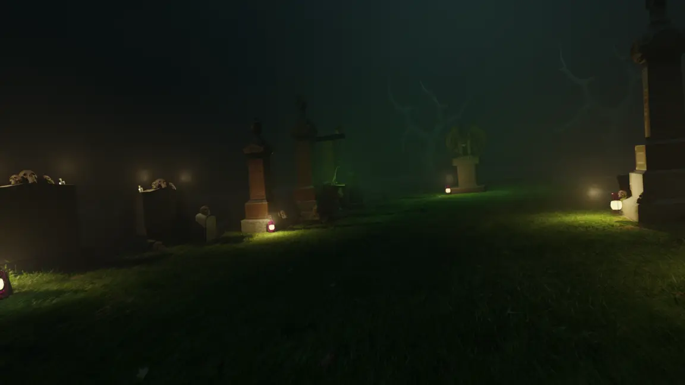
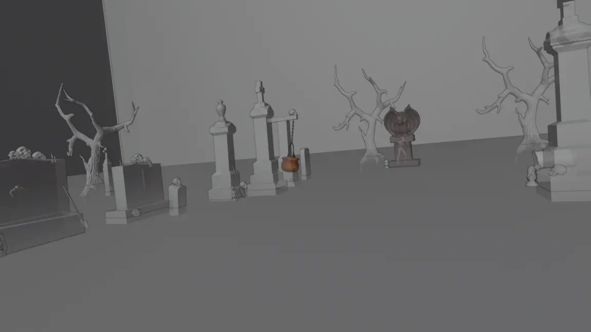

01 // Projet
Lieu d'épouvante
Dans le cadre du cours d' animation multimédia au Cégep Édouard-Montpetit, ce projet individuel visait à créer un lieu d'épouvante en 3D à partir d'une photographie réelle. J'ai ainsi transformé un cimetière en un environnement horrifique.
J'ai ensuite travaillé les textures, l'éclairage et les animations , tout en intégrant une ambiance sonore pour accentuer l'atmosphère inquiétante du lieu.
Mon rôle
- Modélisation 3D de l'environnement
- Mapping de textures
- Animation de personnage et de caméra subjective
- Animation 3D
- Traitement de l'ambiance sonore
- Montage de la scène
Crédits
- Projet individuel
- Assets provenant de Sketchfab, CGTrader et Free3D
- Sons provenant de Soundsnap et Pixabay
- Francois Arsenault - Enseignant animation multimédia
Outils
- Blender
- fSpy
- Reaper
- Adobe Premiere
Analyse de la photographie et de la perspective
J'ai commencé par analyser une photographie de cimetière afin de préparer sa reconstruction en 3D et de repérer les principaux éléments du décor.
À l'aide de fSpy, j'ai ensuite étudié les lignes de fuite pour retrouver la perspective et reproduire le cadrage de la photographie dans Blender.


Modélisation et application des textures
À partir de la photographie de référence, j'ai reconstruit les principaux éléments du cimetière dans Blender , notamment les pierres tombales et les monuments funéraires, en respectant leur disposition et leurs proportions .
J'ai ensuite travaillé le mapping de textures en utilisant des éléments de la photographie originale pour reproduire l'apparence des surfaces et donner un aspect plus réaliste à l'environnement.
Création de l'ambiance horrifique
Une fois le cimetière reconstruit, j'ai enrichi l'environnement avec des éléments de décor horrifiques, notamment des crânes, des chandelles et d'autres accessoires pour rendre la scène plus inquiétante.
J'ai ensuite travaillé l'éclairage et l'atmosphère avec du brouillard et des lumières colorées. J'ai également animé un zombie à l'aide d'un rigging dans Blender pour ajouter du mouvement et renforcer l'ambiance horrifique.
Animation et exploration du cimetière
Pour donner vie à l'environnement, j'ai créé un parcours de caméra en vue subjective dans Blender, permettant d'explorer le cimetière comme si le spectateur s'y trouvait.
J'ai ensuite travaillé les mouvements de caméra et le rythme des déplacements pour mettre en valeur les différents éléments du décor et renforcer le sentiment d'immersion .
L’ambiance sonore
Pour renforcer l'immersion, j'ai travaillé l' ambiance sonore dans REAPER , en utilisant des bruitages et des effets sonores pour accentuer le côté inquiétant du cimetière.
J'ai ensuite réalisé le montage final dans Adobe Premiere Pro , en synchronisant les sons avec les animations et les mouvements de caméra pour créer une séquence horrifique immersive .